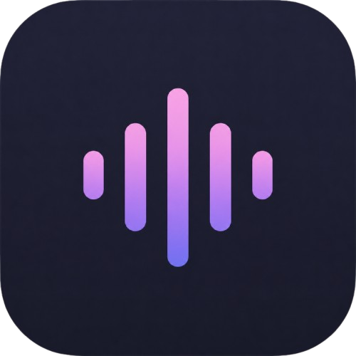
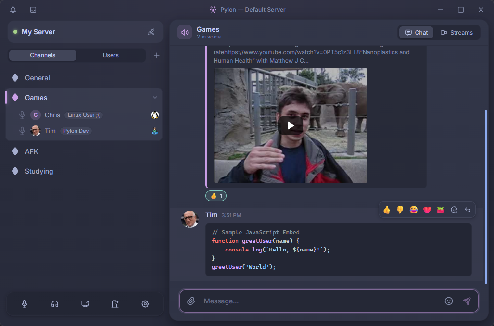
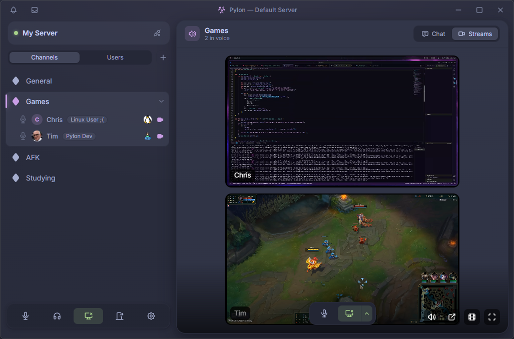
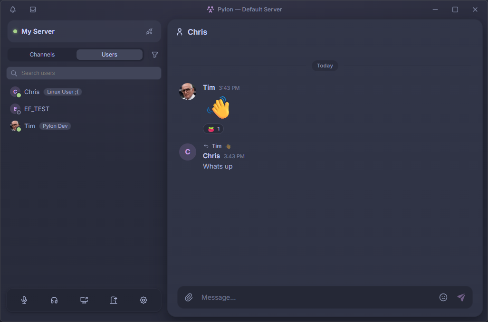
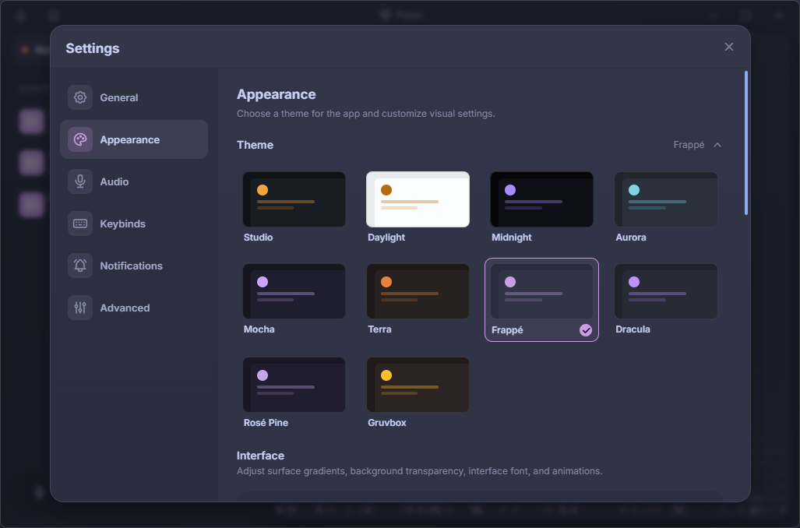
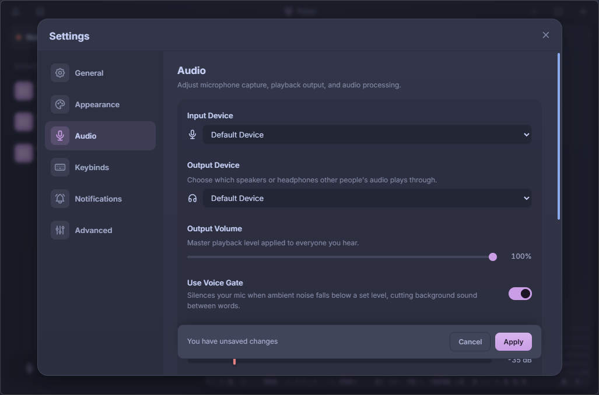
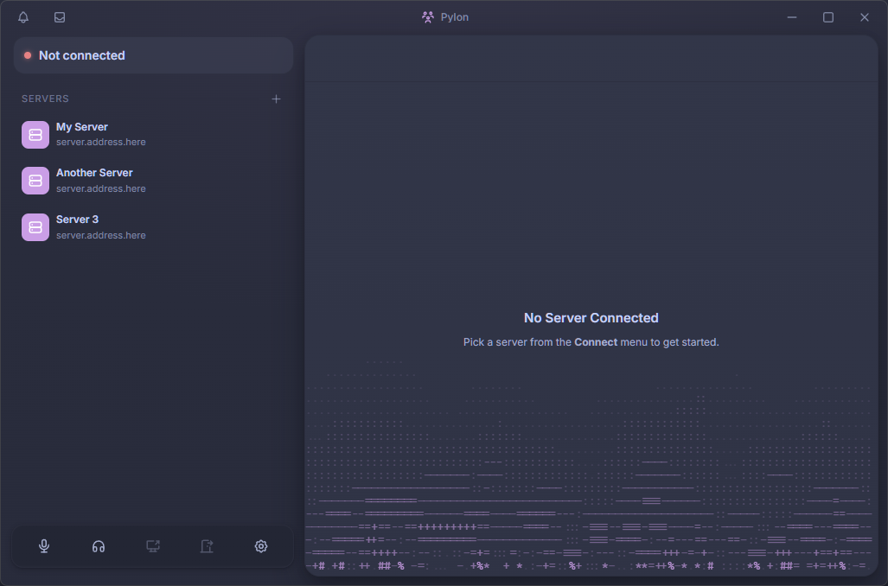

Pylon
Voice, screen share, and chat for you and your friends. Self-hosted, no subscription, nothing trying to sell you anything.
Windows · macOS · Linux (AppImage, deb, snap)
A look around
Everything below is the app as it ships today.

Talk and type in the same place
Every voice channel has its own chat, so the link you're talking about lands where everyone already is.
- Markdown and syntax-highlighted code blocks
- YouTube and link embeds inline
- Replies, reactions, and editing
- See who's talking without leaving the conversation

Share a screen worth watching
Up to 1440p at 60 FPS, with the audio from the thing you're sharing — not a blurry rectangle with the sound muted.
- 1440p60, no quality tier to buy
- Share one app's audio or the whole system
- Theatre mode and a resizable video grid
- Live connection stats when something feels off

Or just talk to one person
Direct messages sit alongside the servers you're in, for the conversations that don't need an audience.
- The same chat features as anywhere else
- Profiles without a feed attached

Make it look like yours
Appearance settings go past a light/dark switch. Set it up once and it stays out of your way.
- A full set of themes, plus window transparency
- Chat formatting and density to taste
- Turn animations off entirely if they bother you
- Soundpacks you can swap or silence — custom sounds coming

Sound like yourself
Noise suppression runs on your machine before anything is sent, and the settings that matter are one panel deep.
- Pick your input and output device explicitly
- Voice gate with a live meter to set it by
- Push-to-talk on a global hotkey
- Local noise suppression, on by choice

As many servers as you want
Save every server you use and jump between them. They're yours to host, and your logins are kept in the OS keychain.
- No limit on saved servers
- Self-hosted — the data stays on your hardware
- Nothing in between you and the people you're talking to
Quality isn't a subscription
1440p60 screen share and high-bitrate voice are just the settings. There is no upgrade tier, because there is nothing to sell you.
Nothing but the conversation
No ads, no popups, no storefront, no feed. You open it to talk to your friends, and that is all it tries to do.
It stays in its lane
It doesn't watch what else you have open, hook into your other apps, or phone home with analytics.
Built for a group of friends
Not a forum with forty channels and a rules page nobody reads. A place to hang out, talk, share a screen, and go.
The server is yours
Host it yourself. Your conversations live on hardware you control, not on a company's terms of service.
Familiar on the first launch
A clean, quiet interface that works the way you'd expect, and looks however you want it to.